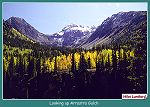
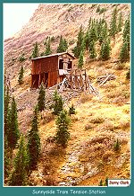

| The Silverton Northern was one of three railroads to operate out of Silverton. The SNRR was the most successful of the three, hauling ore for the mines in the Silverton area for 47 years, between 1895 and 1942. The entire production of San Jaun County, during the years 1873 through 1948, totaled $123,000,000.00. Almost half this total came from the Gold Prince Mine, which shipped its ore over the SNRR. The mines on the SNRR were much more successful than those on the Silverton Railroad. They did not have problems with high levels of under ground water with which to contend. The end of the SNRR was due to a downturn in metal prices, and the reliance on trucks to ship ore in the late 1930's and early 1940's. |

|
Silverton, Colorado
1890 (106k) |
| In 1892, Otto Mears built a 2.2 mile extension of the Silverton Railroad, to serve the mines to the south of Silverton. The biggest mine along the extension was the Silver Lake mine, at the mouth of Arastra Gulch. The mine was owned by Ed and Lena Stoiber. The mine, opened in 1890, had taken its ore by wagon to Silverton until the arrival of the extension. The Stoibers had a very successful operation that afforded them a mansion on the mine property. Their home was called "Waldhiem," which meant forest home. It was one of the finest homes in all of Colorado at the time. |

|
View up Arrastra Gulch
(46k) |
|
 |
Looking up Arrastra Gulch from the old roadbed of the SNRR
(104k) |
| In 1893, the repeal of the Sherman Silver Purchase Act caused the closure of many mines in the Silverton area. Mining was severely affected throughout the nation at this time, and very few remained open. The price of silver had fallen from a high of $.874/ounce in 1892, to a new low of $.588/ounce in 1893. With so many mines closed along the Silverton Railroad, assuming the railroad would be adversely affected is natural. Otto Mears, by pinching pennies, kept his Silverton railroads in operation during this period. He was not as fortunate with the Rio Grande Southern Railroad, which went into receivership. Mears was forced out of the RGS at that time. |
| By 1895, metal prices had recovered enough that the mines north of Silverton were back in limited production. Many mines found gold, which also helped to secure their futures. The talk in Silverton, suggested a huge new mill would be built in Eureka. Mears, never one to miss an opportunity, decided to extend the SRR's branch line south to Eureka. The Silverton Railroad was having trouble keeping its head above water at the time, due to the high water levels encountered in the mines along its route. Because of this, Mears did not want to risk involving the new extension with the SRR. The decision was made to form a separate railroad, when building the new line to Eureka. This was good planning because the SRR went into receivership a short time later. |

|
Eureka, Colorado looking towards Animas Forks
This photo was taken in 1889, the same year CW Gibbs
began his survey for SNRR
(107k) |
| The Silverton Northern Railroad was incorporated on September 20, 1895. The 2.2 mile branch of the Silverton Railroad was purchased and extended to Eureka. The railroad was built on the old toll road that Mears had built to Eureka years earlier. The many toll roads Mears had built in the state of Colorado, made railroad and highway construction much simpler. The toll road system also gave Mears the capital to build the Silverton Railroad, which in turn funded the construction of the Rio Grande Southern Railroad. The SNRR was completed to Eureka in June of 1896. The total cost of construction was $274,000.00 for the new right of way and $40,000.00 for the purchase of the former SRR extension. |
| In November of 1899, news of a major strike at the Sunnyside Mine, now owned by the Gold King Mine, hit the streets in Silverton. Since Animas Forks was the natural shipping point for the new mine, later to be called the Gold Prince, a scramble to reach Animas Forks followed. Both the SNRR and SGNRR had originally planned to go to Animas Forks. These two railroads had even planned to build all the way to Lake City. The new strike gave both railroads an important reason to build a connection to Animas Forks. |
| Construction on the extension of the SNRR to Animas Forks was started 1903, with a work force of 400 men. The four-mile extension was the most difficult of all the railroads Mears would build. The canyon was steep, and required much blasting. An attempt to use Navajo laborers also proved a failure. They spent most of the day chasing marmots through the brush along the right of way. In an attempt to remove the marmots, local boys were hired to shoot all of the pests they could. This plan also failed. As a result, the Navajo work crews were fired, three and one-half days into the work. The railroad found more willing help and proceeded with construction, but materials were also a problem. |
| Mears had a hard time getting the used rail he had ordered from the D&RG. The rail was misrouted all over the D&RG between Salt Lake City and Silverton. The rail finally arrived late in September of 1903. Due to relocation of the route, to the site of Mears old toll road, the line had to be resurveyed, which stopped work for a short time. With the coming of winter, no more work was completed that year. Work resumed in May of 1904. The difficulty of completing the line above Picayune Gulch was grossly under stated in the original survey. A slide in the second week of May slowed progress to a crawl. By May 23, 1904, the construction crews had only finished one and one-half miles of track above Eureka. |
| Many delays in construction can also be attributed to Mears selection of supervisory personnel. Mears had put his son-in-law to work in charge of the crews that were blasting and grading ahead of the track crews. Marshall Smith may have been a fine son-in-law, but he did not know much about grading a railroad. His incompetence added months to the completion of the work. The original survey had also been poorly done so Arthur Ridgway was brought in to do a new survey and take out some of the kinks. A bridge gang from the D&RG was brought in to install the two timber trestles on the route. |
| With all of the delays mentioned above, Mears found himself telling a little white lie to the Board of Directors at their meeting on September 4th, 1904. At this meeting, he reported the work was complete on the new extension. It would actually be two more months until the work was completed. The finishing touches were put on the line in November 1904. The turntable was installed at Animas Forks on November 6th and the last of the rail work was completed immediately. This turntable had an interesting history. It originally saw service at the summit of the D&RG's Marshall Pass line that was a part of the original narrow gauge mainline. The turntable was built in Pittsburgh, Pennsylvania, from plans dated February 26, 1881. The complete cost of the Animas Forks extension totaled $107,169.00. This was about $27,000.00/mile which was very expensive for a branch line at the time. |

|
View of the remains of Animas Forks
(92k) |
| The completion of the new line to Animas Forks brought immediate relief to the SNRR's cash flow problems, caused by the construction cost of the new line. The expansion of the Gold Prince Mine and construction of the new mill in Animas Forks brought a flood of traffic to the SNRR. The new mill was a huge 100 stamp affair with a capacity of 500 tons per day. At the time, it was the largest concentrating mill in the State of Colorado. With its cost of $500,000.00, it was likely the most expensive also. The mill was 336 x 184 feet, and was connected to the mine at the head of Mastodon Basin, by a two mile long tramway. The tramway had a capacity of 50 tons per hour and a total length of 12,600 feet. The tramway had an average speed of 350 feet per minute. Of course, the traffic generated by the new mill kept the SNRR very busy. |

|
Ruins of the Gold Prince Mill
(110k) |
| 1905 saw the construction of a new branch line on the SNRR. The mines above Howardsville had been producing very well and the need for a railroad connection presented itself. The Green Mountain extension started in Howardsville and ran 1.6 miles up Cuningham Gulch. The biggest producer on the new line was The Old Hundred Mining Company. The old Hundred was made up of 30 claims on the Southwest slope of Galena Mountain. The mine was owned by the same group who owned the Gold Prince properties. There were also other large mines along the new branch. The Pride of the West, and Green Mountain mine, shipped their ore over the branch. The Highland Mary Mine was at the far end of Cuningham Gulch, and though a request for rail service was submitted, it was never supplied. |

|
The Buffalo Boy Tram House
(58k) |
| 1906 came in like a lion with several large snowstorms, the worst of which, closed the Silverton Branch of the D&RG. Destructive slides damaged mine buildings and killed some unlucky miners. Even Mother Nature's attempts to close the railroad could not dampen spirits. The prospects for a great deal of traffic in the coming months were just too encouraging. Animas Forks was shipping record amounts, the new branch line to Green Mountain was in operation, and the Sunnyside in Eureka was booming. Business could not have been better on The SNRR, which was handling an unprecedented level of freight traffic. |
| It was about this time Mears revisited his grand plans to improve his railroad empire. The plans for a new six stall round house and turntable were again presented and a new depot at Eureka. In reality none of these facilities were ever built but it does illustrate the optimism of the times. With the record amount of traffic Mears also wanted to keep the SNRR open year round. He designed an elaborate system of snowsheds, to be placed in the areas most prone to slides. The plans also called for some of the snow sheds to be equipped with a bunk house built into them. These would hold crews of snow shovelers, who would at a moments notice, be available to clear the line. |
| The first of these new structures was built just above Eureka and was Mears pride and joy. The first real test of the snow sheds came at the beginning of 1907. As the first major slide of the season came roaring down, everyone waited to see the results. They were less than favorable. The new snow shed was broken into a million pieces. This ended Mears plans for a year round operation on the SNRR. Things went back to normal after that, with the usual seasonal closings, and would continue that way until abandonment. |

|
Remains of the Highland Mary Mine
(64k) |

|
Remains of the Little Nation Mill
(55k) |
| The first of these new structures was built just above Eureka and was Mears pride and joy. The first real test of the snow sheds came at the beginning of 1907. As the first major slide of the season came roaring down, everyone waited to see the results. They were less than favorable. The new snow shed was broken into a million pieces. This ended Mears plans for a year round operation on the SNRR. Things went back to normal after that, with the usual seasonal closings, and would continue that way until abandonment. |
| During the years 1909 through 1911, the weather threw its worst at the region, giving the railroads plenty of problems. On August 19th, 1909, a terrible thunder storm hit the Silverton area that broke all records up to that time. A large mud slide came down in the Needleton area, on the Silverton branch, closing the only connection to the outside world. The SRR was also closed by washouts, and slides, but was quickly reopened on September 4th. Just as the work was completed, another storm hit that closed the SRR again. The crews went to work quickly and the line was opened on September 24th. |
| All of the work to clear the lines had to be done with picks, shovels, and strong backs. Not only was this inefficient, it cost Mears a lot of money. Mears decided to purchase some mechanical equipment to help speed up the task. A steam ditcher was purchased from the American Hoist and Derrick Company. Like most of the other equipment, it was not new, but a cast off from the D&RG. The ditcher was rated at 30 horse power and was self propelled. The new equipment would prove very useful in the years to come. |
| On October 5th of 1911, the worst flooding in Colorado history blocked all four railroads operating out of Silverton. The estimate of damage on Mears' railroads was $25,000.00. Mears went to work, and reopened his lines, except the SGNRR, which was extensively damaged. The management of the Silverton branch of the D&RG were not as quick getting their line opened. This rendered the Silverton railroads all but useless. Mears offered his help to get the Silverton branch open again. In late November, the line was again open, ending a nine-week blockade of Silverton. When all was right in his empire, Mears decided to enter semi-retirement, turning local management of his properties over to his son-in-law, James R. Pitcher. |
| 1912 saw mining activities slow down in the Silverton area, except for a brief boom in zinc mining just before WWI. 1912 was also the last year passenger service was offered on the SRR. The Frisco (Bagley) Tunnel above Animas forks was shipping ore, but the Silver Lake properties, now owned by the Guggenhiems, failed to meet expenses and closed. The Silver Lake mine was reopened in 1930, as a part of the newly formed Shenendoah-Dives consolidation, that operated into the 1980's. |
| The owners of the SGNRR, which was under lease to the SNRR, were having financial problems and defaulted on their mortgage. Otto Mears bought the railroad at a tax sale for $14,600.00. The SGNRR became a branch line of the SNRR, who had leased the line since 1906. To lower the cost of passenger service over the SNRR, a new rail bus was built in the shops at the Sunnyside Mine. The little contrivance was fondly known as the "Casey Jones." Casey could seat eleven passengers, had a 4-wheel pilot truck, and a chain drive to the single rear axle. The brakes were operated by turning the steering wheel. After an accident in 1918, the little bus was rebuilt, and had the engine, transmission, and drive train from a Cadillac installed. The Casey Jones is on display at the San Jaun County Historical Society Museum in Silverton. |
| 1916 was the final season for operations over the Animas Forks extension of the SNRR. Shipments of zinc concentrates were good, because the metal was being used in brass shell casings, for the war in Europe. In 1917, the Terry family, who owned the Sunnyside Mine in Eureka, sold out to the United States Smelting and Refining Company for $500,000.00. After purchasing the facilities at Eureka, the USS&R purchased the Gold Prince mill in Animas Forks. The equipment in Animas Forks was moved to Eureka, and used to remodel the Sunnyside mill, into a state of the art facility. |
|
 |
Eureka Gulch
(194k |
| The remodeled mill at Sunnyside was of the latest design, and could process five-hundred to one-thousand tons of ore per day. The mill operated for about a year, until the mine and some of the surrounding buildings burned in a disastrous fire. The mine was rebuilt, and no sooner had operations resumed, when a fire severely damaged the new mill. The mill was rebuilt and operated until 1921 when metal prices dropped yet again, forcing it to close. The mill was the only significant source of traffic on the SNRR. The mill closed then but was reopened in 1922, the same year the Silverton Railway was abandoned. |
| Otto Mears had retired to Pasadena, California in 1912 where he purchased a hotel. He visited Silverton during his final years, then passed away on June 24th, 1931. The "Path Finder of the San Juans" was gone. All of his railroads were gone except the SNRR. In 1933 and 1934, no trains were run over the SNRR. Animas Forks had been abandoned in the 1920's when the Gold Prince mill showed no signs of reopening. The branch to Animas Forks was removed by the San Juan county highway department in 1936. |
| During the 1930's, the few mines still in operation, were using trucks to ship their ore to Silverton, then over the D&RG. A short revival occurred in 1937 when the Sunnyside reopened for the last time. The SNRR was hurriedly put back into operation. At the end of the year more than one-thousand cars of concentrates had been shipped out of Silverton on the D&RG, with four-hundred of these cars originating on the SNRR. The boom was short lived, as the Sunnyside closed for the last time in July of 1939. The metal prices were just not high enough to support the continued operation of the mine. The SNRR would never operate again, accept to run clean up trains and scrap runs. |
| Late in 1941, the remaining locomotives of the SNRR were put up for sale. The other equipment was sold to satisfy tax liens. The final nail was driven on August 31, 1942, when the ICC gave permission to abandon the SNRR. WWII had made the railroad more valuable as scrap metal. The three locomotives were given a short reprieve when sent to aid the war effort in Skagway, Alaska on the White Pass and Yukon Railroad. After the War they to were scrapped. |
| Road Number | Name | Type | Engine Weight | Tractive Effort | Drivers | Origin and History |
| #1 | None | 2-8-0 | 58,200 | 13,025 | 36" | Former SRR #101. Transferred in December of 1896.Scrapped in Silverton in 1924. |
| #3 | None | 2-8-0 | 72,000 | 18,819 | 37" | Purchased new at a cost of $8,648.75. Baldwin class 10-26-E-315. Originally painted olive green and aluminum. Sold to White Pass and Yukon. Became thier #22 in October 1942. Returned to Seattle, Washington in 1944. Scrapped in Seattle in 1944. |
| #4 | None | 2-8-0 | 72,000 | 18,819 | 37" | Purchased new at a cost of $8,375.00. Baldwin class 10-26-E-325. Originally painted olive green and aluminum. Sold to White Pass and Yukon. Became thier #23 in October 1942. Returned to Seattle Washington in 1944. Scrapped in Seattle in 1944. |
| #34 | None | 2-8-0 | 88,100 | 18,800 | 37" | Originally SG&NRR #34. Aquired second hand by SNRR January 195 when Otto Mears purchased the SG&NRR. Sold to White Pass and Yukon. Became thier #24 in October 1942. Stored unservicable at Skagway, Alaska in 1944. Scrapped in Skagway in 1951. |